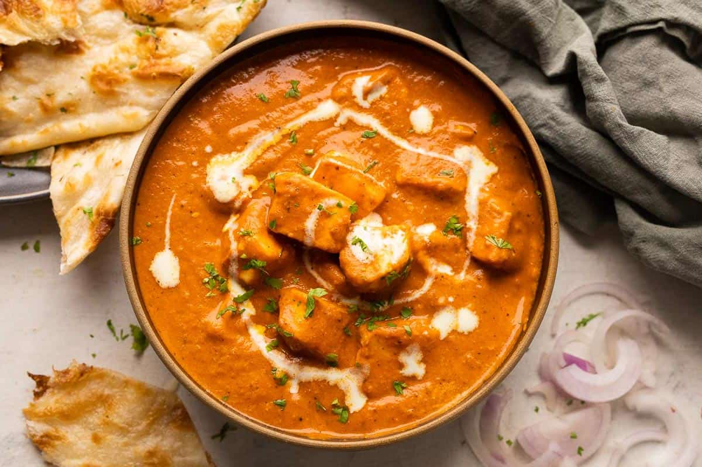

Paneer Recipe
Paneer Butter Masala Recipe

Description
Paneer Butter Masala is a popular Indian dish made with paneer (Indian cottage cheese)
in a rich and creamy tomato-based sauce. It is often served with naan or rice.
This recipe uses paneer, butter, cream, tomatoes, and a blend of spices
to create a flavorful and indulgent dish.
Ingredients
- 200g paneer, cubed
- 2 tablespoons butter
- 1 cup tomato puree
- 1/4 cup cream
- 1 teaspoon ginger-garlic paste
- 1 teaspoon red chili powder
- 1/2 teaspoon turmeric powder
- 1/2 teaspoon garam masala
- Salt to taste
- Fresh coriander leaves for garnish
Steps
-
Step1: Heat butter in a pan.
-
Step2: Add ginger-garlic paste and cook for 1 minute.
-
Step3: Add tomato puree and cook for 2-3 minutes.
-
Step4: Add cream and mix well.
-
Step5: Add red chili powder, turmeric powder, and garam masala.
-
Step6: Add cubed paneer and cook for 2-3 minutes.
-
Step7: Garnish with fresh coriander leaves.